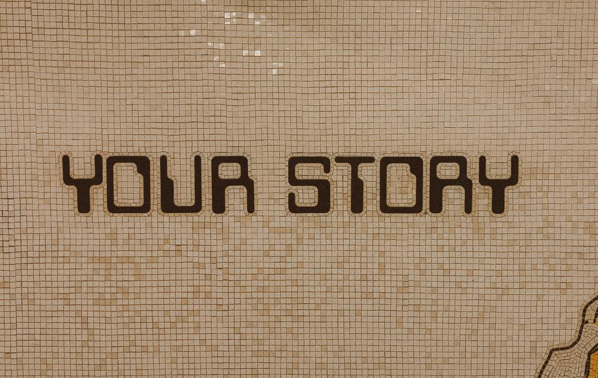

Stories
An answer to a long said prayer.
by Owen S. Jakopo

I come from a big family of nine living children all depending on our mother. When a family is that big, it is almost impossible to get enough attention from a parent, especially a single one. I love my family so much and I thank my mother for all she did for me and my siblings to be where we are today.
We grew up knowing only sorrow, we struggled for food, clothing items were not important at the time, a roof over our heads, and one meal a day was all that mattered. Life became more difficult for us, that most of us if not all had to drop out of school in primary level, there was not enough to pay one child, now imagine nine.
As if that was enough, in 2005, our government put in motion an opperation, in this, they went around destroying houses that were built without house plans and most cotages were not part of the original house plans. My family was affected, the cottage we were renting was to be demolished and we had no place to go, again, we had to move and that was our life. A miracle happened, our father(may his soul rest in peace) turned up from nowhere and moved us to one of his houses in a different city.
With all these things happening, school or the dream to get an education soon died, we had to face reality and accept that we were poor and noone was going to send us to school. The only education we relied on was the gospel taught at church, for it was and is free. My brothers and I learned to speak, read and write english and our language, shona from the Book of Mormon, the book of Mormon stories and the Doctrine and Covenants stories. We taught ourselves and we are thanful for the reading material we got from church. We wanted and hopped to go to school, even to someday get degrees, but for members of my family, we thought it would never happen, We thought it was impossible.
At the age of 19, in 2013, I prepared and was called to serve a full time mission in my own country. I was blessed so much by that decision I made to go serve a mission. My desire to study grew so much and after my mission, my plan was to get a job and send myself to school. Well, life did not go as I thought it would go. Everywhere I went to, to look for a job, they wanted someone who had 5 O'levels and I did not have any because I did not even reach that stage in school. I lost hope, and I thought that was the end and I was meant to suffer. I spoke to many people about my situation, and greatest advices I received was for me to turn to the Lord for He is mighty to serve. I remembered the experiences I had on mission and speedily, I repented for forgetting how merciful the Lord to during those two years.
I started to pray for help, with faith and hope that my Savior will come for me and He did. In 2020, September, I joined pathway-connect worldwide and I later realised that this program was an answer to my prayers. In July 2021, I graduated from pathway connect, getting my first circular educational certificate in the process. That certificate gave me confidence, got me jobs each time I applied for a job using it. Now I am a student for an online degree, doing a Bachelor of Science with Brigham Young Univerty Ihado and my major is Applied Technology. I went from no education at all to becoming a University student in one of the best schools I know. I am also doing my O'levels right now, hoping to write the O'levels exams in months to come. I went from no hope to studying in two schools at the same time.
Surely, my Heavenly heard my prayers, and answered them.